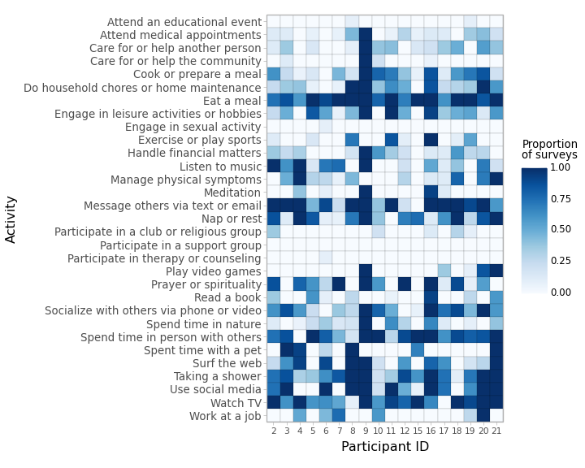
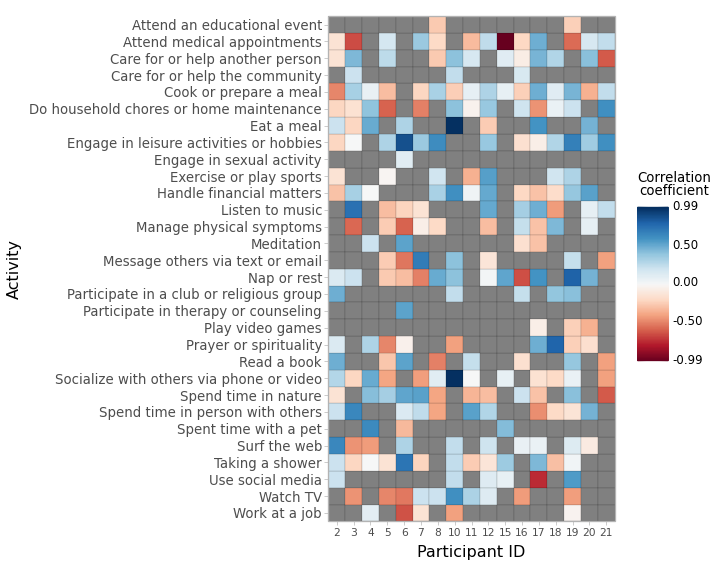

| Characteristic | N=18 |
| Age (years) | 63.44 (9.36) [41.0-75.0] |
| Gender | |
| Female | 13 (72.22%) |
| Male | 5 (27.78%) |
| Race | |
| White/Caucasian | 12 (66.67%) |
| Black/African American | 6 (33.33%) |
| Baseline PROMIS t-score | |
| Ability to participate in social roles/activities | 50.38 (9.27) [33.9-64.2] |
| Anxiety/fear | 51.79 (10.63) [40.3-69.3] |
| Cognitive function | 51.34 (8.22) [37.6-61.2] |
| Depression/sadness | 48.25 (9.84) [41.0-69.5] |
| Fatigue | 52.78 (11.24) [33.7-67.0] |
| Pain interference | 53.12 (9.39) [41.6-68.0] |
| Physical function | 48.06 (8.49) [31.6-57.0] |
| Sleep disturbance | 49.72 (8.07) [32.0-59.2] |
| n (%); Mean (SD) [Range] | |
Good Day quantitative analyses
1 Data preparation
1.1 Baseline demographics
Participants’ self-reported demographic information including age (in years, computed from the participant’s birth date and the questionnaire completion date), gender (female, male), and race (White/Caucasian, Black/African American) was collected via a baseline questionnaire administered via REDCap.
1.2 Baseline quality of life
To assess quality of life, participants also completed the PROMIS Profile 29+2 v2.1 (Cella et al., 2019) as part of the baseline questionnaire. T-scores (centered at 50) were obtained from participants’ item-level responses via HealthMeasures Scoring Service using the default calibration sample. T-scores were obtained for the following domains: ability to participate in social roles/activities, anxiety/fear, cognitive function, depression/sadness, fatigue, pain interference, physical function, and sleep disturbance.
1.3 Daily surveys
Daily goodness ratings (indicated using a 5-point Likert scale in response to the question, “How would you describe today?”) and endorsements for up to 31 activities were obtained using an in-house questionnaire administered electronically via Qualtrics. There were n=244 diary survey responses from n=21 unique participant IDs (including responses for the following 2 missing/invalid IDs: 0, NA) in the data exported from Qualtrics on February 23, 2024. There were no responses for the following 2 expected participant IDs: 13, 14.
We performed the following initial steps to clean the daily diary data:
- Drop responses that were less than 50% complete (n=0/244, 0.0%)
- Drop responses with missing or invalid participant IDs (n=21/244, 8.61%)
- Assign surveys to a date using a time threshold of 0 minutes after midnight; i.e., any survey completed between 12:00 AM and 11:59 PM on a given date is treated as corresponding to that date
- Drop responses recorded before the participant’s study start date and after the participant’s study end date (n=23/223, 10.31%)
- Drop duplicate responses recorded by the same participant on a given date by retaining only the latest completed survey (i.e., the survey associated with the max timestamp) with a non-missing value for the day’s overall goodness rating (n=22/200, 11.0%)
- Fill missing values for binary activity endorsements with 0, on the assumption that a lack of endorsement reflects that the participant did not engage in the activity
This left us with a total of n=178 diary survey responses from n=18 participants (mean (SD) responses per participant, 9.89 (3.82); range, 1-15) eligible for analysis. All responses for participant ID 1 were dropped.
All analyses were performed in Python v3.12.2.
2 Descriptive statistics
2.1 Baseline measures
2.2 Goodness ratings
2.2.1 Across participants
| N observations | Mean | SD | Median | Min | Max |
| 178 | 4.01 | 0.72 | 4.0 | 2.0 | 5.0 |
2.2.2 Within participants
| Participant ID | N observations | Mean | SD | Median | Min | Max |
| 2 | 8 | 4.12 | 0.35 | 4.0 | 4.0 | 5.0 |
| 3 | 8 | 3.75 | 0.46 | 4.0 | 3.0 | 4.0 |
| 4 | 15 | 3.8 | 0.77 | 4.0 | 2.0 | 5.0 |
| 5 | 13 | 4.54 | 0.78 | 5.0 | 3.0 | 5.0 |
| 6 | 11 | 3.73 | 0.79 | 4.0 | 3.0 | 5.0 |
| 7 | 13 | 4.15 | 0.69 | 4.0 | 3.0 | 5.0 |
| 8 | 11 | 3.55 | 0.69 | 4.0 | 2.0 | 4.0 |
| 9 | 1 | 3.0 | 3.0 | 3.0 | 3.0 | |
| 10 | 5 | 3.8 | 0.45 | 4.0 | 3.0 | 4.0 |
| 11 | 14 | 3.57 | 0.51 | 4.0 | 3.0 | 4.0 |
| 12 | 10 | 3.7 | 0.82 | 4.0 | 2.0 | 5.0 |
| 15 | 13 | 3.85 | 0.55 | 4.0 | 2.0 | 4.0 |
| 16 | 15 | 4.73 | 0.46 | 5.0 | 4.0 | 5.0 |
| 17 | 8 | 4.38 | 0.52 | 4.0 | 4.0 | 5.0 |
| 18 | 10 | 3.6 | 0.7 | 4.0 | 2.0 | 4.0 |
| 19 | 11 | 4.36 | 0.5 | 4.0 | 4.0 | 5.0 |
| 20 | 7 | 4.57 | 0.53 | 5.0 | 4.0 | 5.0 |
| 21 | 5 | 3.8 | 0.45 | 4.0 | 3.0 | 4.0 |
2.2.3 Intraclass correlation coefficient
The intraclass correlation coefficient (ICC) for goodness was computed using the statsmodels package (v0.14.1). To compute ICC, we fit an intercept-only linear mixed effects model with daily goodness rating as the outcome and random intercepts for participant. We extracted the estimates of the random effects (i.e., between-group, where the groups are the participants) and residual (i.e., within-group) variance. ICC was then calculated as the ratio of the between-group variance and the total variance (the sum of the between-group and within-group variances).
| N observations | N groups | Between-group variance | Within-group variance | ICC |
| 178 | 18 | 0.12 | 0.3935 | 0.2337 |
The ICC for daily goodness rating was 0.2337; i.e., 23.37% of the total variance in goodness rating was accounted for by participant grouping. If ICC is relatively small, this suggests that goodness rating has more “state” variability, or relatively small differences between persons and relatively large differences within persons. If ICC is relatively large, this suggests that goodness rating has more “trait” variability, or relatively large differences between persons and relatively small differences within persons.
2.3 Activities
2.3.1 Across participants
| Activity | N=178 | |
| n | % | |
| Eat a meal | 160 | 89.89 |
| Message others via text or email | 133 | 74.72 |
| Watch TV | 131 | 73.6 |
| Spend time in person with others | 124 | 69.66 |
| Taking a shower | 118 | 66.29 |
| Use social media | 98 | 55.06 |
| Nap or rest | 95 | 53.37 |
| Socialize with others via phone or video | 90 | 50.56 |
| Prayer or spirituality | 87 | 48.88 |
| Engage in leisure activities or hobbies | 81 | 45.51 |
| Surf the web | 76 | 42.7 |
| Do household chores or home maintenance | 73 | 41.01 |
| Cook or prepare a meal | 73 | 41.01 |
| Listen to music | 70 | 39.33 |
| Manage physical symptoms | 56 | 31.46 |
| Spent time with a pet | 50 | 28.09 |
| Exercise or play sports | 46 | 25.84 |
| Spend time in nature | 40 | 22.47 |
| Handle financial matters | 37 | 20.79 |
| Read a book | 36 | 20.22 |
| Work at a job | 36 | 20.22 |
| Care for or help another person | 35 | 19.66 |
| Attend medical appointments | 26 | 14.61 |
| Meditation | 23 | 12.92 |
| Play video games | 16 | 8.99 |
| Participate in a club or religious group | 10 | 5.62 |
| Care for or help the community | 4 | 2.25 |
| Attend an educational event | 2 | 1.12 |
| Participate in therapy or counseling | 1 | 0.56 |
| Engage in sexual activity | 1 | 0.56 |
| Participate in a support group | 0 | 0.0 |
2.3.2 Within participants

3 Associations with goodness ratings
3.1 Participant-level goodness and baseline measures
To characterize the association between participants’ mean goodness rating and age in years at enrollment and PROMIS t-scores for each of the available domains at baseline, we calculated a series of Pearson correlations. To characterize the association between participants’ mean goodness rating and gender (female, male) and race (Black/African American, White/Caucasian), we performed a series of independent samples t-tests. We corrected for multiple comparisons by controlling the false discovery rate (Benjamini-Hochberg procedure) (q-value). Correlations, t-tests, and p-value adjustment were performed using the pingouin package (v0.5.4).
| Characteristic | Test statistic | p-value | q-value |
| Age (years) | r = 0.01 | 0.958 | 0.958 |
| Gender | M (SD)Female = 3.99 (0.5) M (SD)Male = 3.81 (0.2) t(15.89) = 1.09 |
0.292 | 0.46 |
| Race | M (SD)White/Caucasian = 3.96 (0.39) M (SD)Black/African American = 3.91 (0.57) t(7.43) = 0.19 |
0.856 | 0.941 |
| Baseline PROMIS t-score | |||
| Ability to participate in social roles/activities | r = 0.56 | 0.015 | 0.078 |
| Anxiety/fear | r = -0.62 | 0.006 | 0.065 |
| Cognitive function | r = 0.35 | 0.16 | 0.293 |
| Depression/sadness | r = -0.54 | 0.021 | 0.078 |
| Fatigue | r = -0.41 | 0.089 | 0.233 |
| Pain interference | r = -0.39 | 0.106 | 0.233 |
| Physical function | r = 0.2 | 0.423 | 0.582 |
| Sleep disturbance | r = -0.11 | 0.662 | 0.809 |
3.2 Day-level goodness and activities
To characterize overall associations between day-level goodness and activities, we fit a series of univariable linear mixed effects models with daily goodness rating as the dependent variable, each binary activity separately as the single independent variable, and random intercepts for participant to account for correlations between observations from the same individual. To ensure sufficient variability for analysis, we analyzed only those activities that were endorsed on between 20.0% and 80.0% of all surveys. We corrected for multiple comparisons by controlling the false discovery rate (Benjamini-Hochberg procedure). Mixed model analysis was performed with the statsmodels package (v0.14.1) and p-value adjustment was performed using the pingouin package (v0.5.4).
Results are displayed in the table below, with each row corresponding to a separate model (intercept terms have been excluded).
| Activity | n (%) | N obs | N groups | Assciation with daily goodness rating | ||||
| Beta | SE | 95% CI | p-value | q-value | ||||
| Cook or prepare a meal | 73 (41.01%) | 178 | 18 | 0.097 | 0.114 | -0.127,0.321 | 0.395 | 0.767 |
| Do household chores or home maintenance | 73 (41.01%) | 178 | 18 | 0.059 | 0.116 | -0.17,0.287 | 0.615 | 0.767 |
| Engage in leisure activities or hobbies | 81 (45.51%) | 178 | 18 | 0.455 | 0.114 | 0.231,0.679 | <0.001 | <0.001 |
| Exercise or play sports | 46 (25.84%) | 178 | 18 | 0.189 | 0.158 | -0.12,0.498 | 0.231 | 0.767 |
| Handle financial matters | 37 (20.79%) | 178 | 18 | 0.093 | 0.127 | -0.157,0.342 | 0.466 | 0.767 |
| Listen to music | 70 (39.33%) | 178 | 18 | 0.06 | 0.127 | -0.189,0.309 | 0.637 | 0.767 |
| Manage physical symptoms | 56 (31.46%) | 178 | 18 | -0.25 | 0.129 | -0.503,0.003 | 0.052 | 0.52 |
| Message others via text or email | 133 (74.72%) | 178 | 18 | 0.009 | 0.156 | -0.297,0.314 | 0.956 | 0.956 |
| Nap or rest | 95 (53.37%) | 178 | 18 | 0.11 | 0.126 | -0.138,0.357 | 0.385 | 0.767 |
| Prayer or spirituality | 87 (48.88%) | 178 | 18 | 0.081 | 0.138 | -0.189,0.352 | 0.556 | 0.767 |
| Read a book | 36 (20.22%) | 178 | 18 | 0.144 | 0.163 | -0.177,0.464 | 0.379 | 0.767 |
| Socialize with others via phone or video | 90 (50.56%) | 178 | 18 | 0.046 | 0.116 | -0.181,0.274 | 0.69 | 0.767 |
| Spend time in nature | 40 (22.47%) | 178 | 18 | 0.122 | 0.128 | -0.129,0.374 | 0.339 | 0.767 |
| Spend time in person with others | 124 (69.66%) | 178 | 18 | 0.204 | 0.134 | -0.059,0.466 | 0.128 | 0.64 |
| Spent time with a pet | 50 (28.09%) | 178 | 18 | -0.078 | 0.189 | -0.448,0.292 | 0.679 | 0.767 |
| Surf the web | 76 (42.7%) | 178 | 18 | -0.015 | 0.135 | -0.279,0.249 | 0.913 | 0.956 |
| Taking a shower | 118 (66.29%) | 178 | 18 | 0.112 | 0.117 | -0.118,0.341 | 0.34 | 0.767 |
| Use social media | 98 (55.06%) | 178 | 18 | 0.069 | 0.151 | -0.228,0.365 | 0.65 | 0.767 |
| Watch TV | 131 (73.6%) | 178 | 18 | -0.204 | 0.129 | -0.458,0.049 | 0.114 | 0.64 |
| Work at a job | 36 (20.22%) | 178 | 18 | -0.124 | 0.159 | -0.436,0.188 | 0.437 | 0.767 |
| SE: standard error; CI: confidence interval | ||||||||
3.3 Within-person, day-level goodness and activities
In an exploratory post-hoc analysis to characterize within-person associations between day-level goodness and activities, we calculated a series of point-biserial correlations for each activity, with activity endorsement as the binary variable and daily goodness rating as the continuous variable, separately for each participant. We analyzed only participants who had at least n=2 observations and non-zero variance in goodness, and within each participant, only those activities that had non-zero variance in endorsement. We corrected for multiple comparisons for each participant by controlling the false discovery rate (Benjamini-Hochberg procedure). Point-biserial correlation coefficients were calculated using the scipy package (v1.11.3) and p-value adjustment was performed using the pingouin package (v0.5.4).
The figure below displays the results of the analysis as a heat map. Activities (n=30) are displayed along the y-axis and participants (n=17) are displayed along the x-axis. The association between daily goodness rating and a given activity for a given participant (point-biserial correlation coefficient) is displayed along the color axis, with darker reds indicating stronger negative and darker blues indicating stronger positive correlations; grey squares indicate that there was zero variance in the endorsement of a given activity for a given participant, precluding calculation of the respective correlation coefficient.
